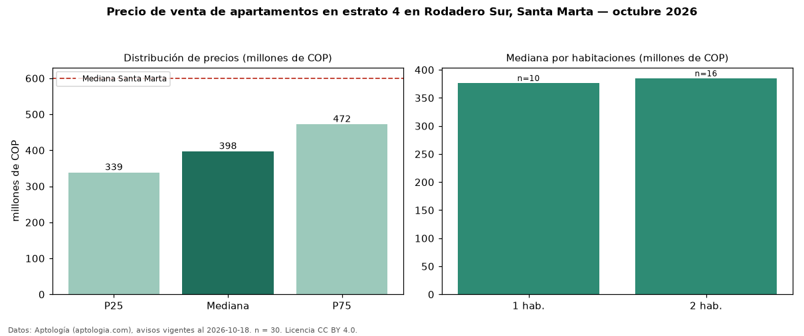

Precio de venta de apartamentos en estrato 4 en Rodadero Sur, Santa Marta — octubre 2026
Con 30 avisos vigentes, el precio mediano de apartamentos en estrato 4 en venta en Rodadero Sur, Santa Marta es COP 398 millones. Eso es 4 % menos que la mediana de toda la vivienda de estrato 4 de Rodadero Sur (COP 416 millones, n = 43); este segmento reúne el 70 % de esos avisos. Por metro cuadrado, la mediana es COP 6,49 millones/m² (n = 30), 11 % por encima del conjunto de referencia (COP 5,83 millones/m²). El área mediana anunciada es 59 m². El segmento con más oferta es el de 2 habitaciones (16 avisos, mediana COP 385 millones); pasar de 1 habitación a 2 habitaciones cambia la mediana +2 %. La administración mediana declarada es COP 431.500 al mes (n = 20). La mediana de todos los apartamentos en venta de Santa Marta es COP 600 millones (−34 % de diferencia). La mitad central de los avisos va de COP 339 millones a COP 472 millones (razón 1,4), una dispersión baja. Datos: Aptología (aptologia.com), CC BY 4.0 — https://www.aptologia.com/venta/santa-marta/rodadero-sur. Archivos: PDF, CSV con las cifras y gráfica PNG.

| Avisos únicos | 30 |
|---|---|
| Percentil 25 | COP 338.750.000 |
| Mediana | COP 397.500.000 |
| Percentil 75 | COP 472.500.000 |
| Mediana por m² | COP 6.488.527 |
Fuente: avisos vigentes de portales inmobiliarios recopilados por Aptología, deduplicados (mínimo 30 avisos únicos por celda). Precios pedidos, no cerrados. Fecha: 2026-10-18.